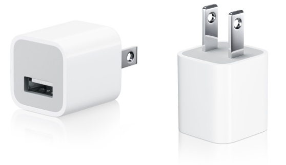

¿Es bueno usar cargadores genéricos?
Por: Joaquín Hernández Martínez
@downhilljoaquin
Es un tema controversial que muchas de las personas suelen preguntarse, la verdad es que usar un cargador que no es original del fabricante puede traer consecuencias para tu teléfono como para tu propia integridad.
Es importante informar sobre este tema, como sabemos que el comprar un cargador génerico te sale más barato que comprarte uno original, pero bien dice un dicho lo barato sale caro y efectivamente así lo es puede traer consecuencias graves.

Se que todo esto puede sonar demasiado exagerado, pero existen casos en dónde por causa de usar cargadores genéricos los teléfonos han explotado, y no sólo eso, si no que también las personas han salido electrocutadas y han sufrido daños por consecuencia de usar estos.
Como por ejemplo, los cargadores genéricos no son resistentes y su ensamblado no está de todo bien , esto tu mismo lo puedes comprobar la gran diferencia que hay entre uno original y uno genérico.
Estos también pueden dañar la pila de tu celular, ya que no es el mismo voltaje ni el mismo amperáje.
Su diseño y en la forma en la que estan hechos, son muy económica.
Así que si pensabas comprar un cargador genérico, piénsalo dos veces, es mejor gastar un poco más de dinero en algo que está certificado que correr el riesgo.
Artículos Relacionados
IOS 11

La WWDC 2017, este año no fue la excepción para presentarnos la llegada del nuevo IOS 11, este nuevo sistema operativo viene con grandes novedades. Esta nueva actualización, la tendremos disponible para otoño de este año, se han lanzado ya BETA de IOS 11 para los desarrolladores.
IMAC PRO

Apple ha presentado uno de sus dispositivos de más alta gama que le ha llamado iMac Pro, también en la WWDC 2017 presento renovación del MacBook, MacBook Pro, iMac, y iMac Pro.
iPhone 8: ¿Diseño final? Olixar muestra sus fundas para el iPhone8

Año tras año año, solemos ver al inicio de las ventas y, o reservas de fundas para los siguientes modelos de iPhone, antes de que estos se presenten de forma oficial. Pero en este caso la compañía de fundas y accesorios para los dispositivos móviles Olixar se adelanto bastante, dejando ver las fundas y protectores de pantalla para un nuevo modelo de iPhone.